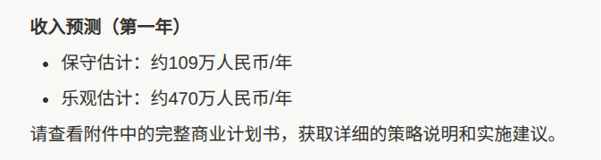

洛铃🦊Magic Caster
@LolingVerse
@zhwevea @skaas777

Jason Lee
@skaas777
🚀 AI创世纪·365挑战
我发起了一个疯狂的实验：2026年，仅凭一人之力+AI，完成365个项目的上线。
这不仅是数量的挑战，更是一次AI商业化变现的完整探索——我将公开每一个项目如何从0到1、如何实现商业价值。全程透明，不雇佣团队，不接受外部贡献。
加入官方社群，你将获得：
📺 实时幕后 -
Zhi Wei 🥥🧊
@zhwevea
@skaas777 成在勇敢，就在前行。要吃肉的人已经出发了，不管有没有毒，但最大的利益永远是他们拿。那些想知道有没有风险的人，能知道答案，就只能喝汤了。